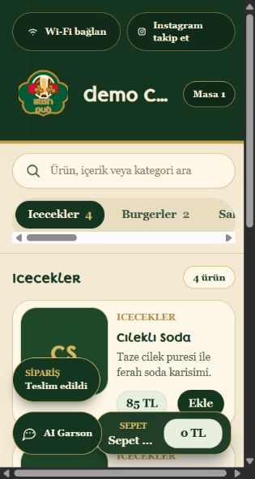
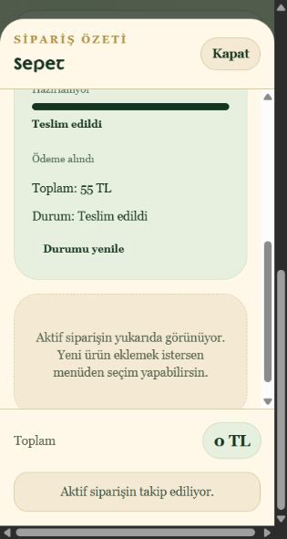
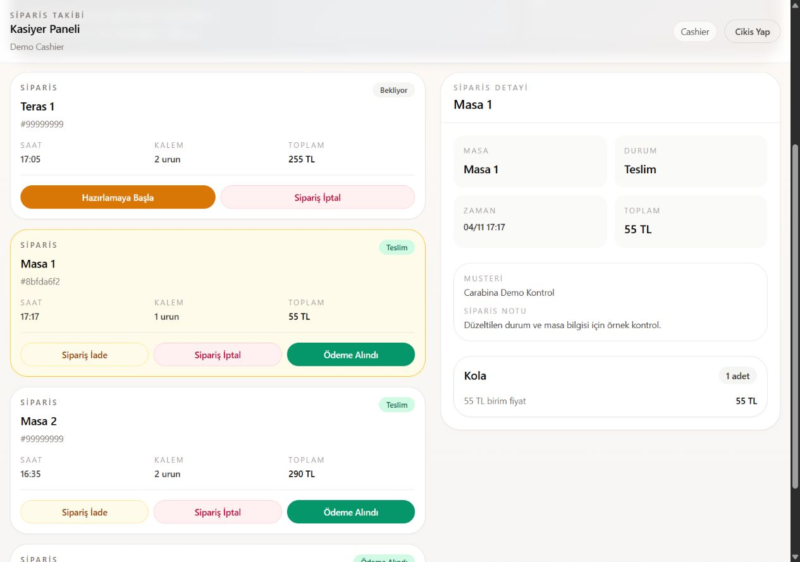

Menüyü aç.
Seçimini yap.
Müşteriniz masa QR koduyla menüye ulaşır; kategoriler arasında gezinir, ürün detayını inceler ve sepetinden siparişini onaylar.
- Kategori bazlı menü
- Ürün detayları ve fiyatlar
- Sepet ve sipariş oluşturma
RESTORAN · KAFE · BAR
Müşteriniz menüyü telefonunda incelesin. Ekibiniz siparişi ekranından takip etsin. Siz ürünleri ve masaları tek yerden yönetin.
Carabina Software tarafından geliştirildi.
QR ile menü → sepet → sipariş takibi
Temsili işleyiş · Ürün ekranlarını demo görüşmesinde inceleyin.
MASADAN YÖNETİME
İşletmenizdeki müşteri ve personel akışına birlikte bakalım.
Müşteriniz masa QR koduyla menüye ulaşır; kategoriler arasında gezinir, ürün detayını inceler ve sepetinden siparişini onaylar.
Kasa ekranı aktif siparişleri bir araya getirir. Ekibiniz gelen siparişleri görür ve sipariş durumlarını günceller.
Yönetim panelinde ürün, kategori ve masa bilgilerini düzenleyin. Masalarınız için QR kodlarını oluşturun.
UYGULAMANIN İÇİNDEN
Demo Cafe ve test siparişinden alınmış gerçek uygulama görüntüleri. Müşterinin seçimi, siparişin durumu ve ekibin takibi aynı akışın parçaları.

Masaya ait menüyü inceleme ve ürün seçimi.

İşletmenin güncellediği aşama müşteriye yansır.

Sipariş listesi ve ayrıntıları üzerinden süreci yönetin. Ekran görüntüsünü büyütmek için üzerine dokunun.
MENÜYE EŞLİK EDEN SOHBET
AI Garson, menü hakkında bilgi ve öneri sunmak için tasarlandı. İşletmenizin menüsüne uygun kullanımını ve pakete dahil kullanım hakkını demo görüşmesinde birlikte netleştiriyoruz.
Sipariş, müşterinin sepet onayıyla oluşturulur. İçerik ve alerjen gibi önemli bilgiler için personel teyidi gerekir.
İŞLETMENİZE UYGUN KAPSAM
Aylık abonelik veya yıllık peşin ödeme. Kapsamı ve toplam bedeli yazılı teklifinizde görün.
Aylık ödeme ile başlayın. Paket kapsamı ve kullanım hakkı teklifinizde belirtilir.
DİJİTAL MENÜ
Menüsünü dijitale taşımak isteyen işletmeler için.
MENÜ + OPERASYON
Menü ve sipariş akışını birlikte yönetmek isteyenler için.
İlk kurulum, menü aktarımı, ek şubeler ve özel geliştirmeler teklifinizde ayrıca açıklanır. Yıllık ödemede de yapay zekâ kullanım hakkı aylık tanımlanır. Ek kullanım koşulları baştan belirtilir.
KARAR VERMEDEN ÖNCE
Menünüzü, ürün ve kategori yapınızı, masa sayınızı ve sipariş sürecinizi inceliyoruz. Menü aktarımı ve eğitim kapsamı teklifinizde belirtilir.
Yıllık seçenekte 12 aylık hizmet için peşin ödeme teklifi hazırlanır. Aynı kapsamın aylık toplamına göre avantajı ve toplam tutarı teklifte açıkça gösterilir. Yapay zekâ kullanım hakkı her ay için ayrı tanımlanır.
Pakete dahil aylık kullanım hakkı ve ek kullanım koşulları yazılı teklifinizde belirtilir. İhtiyacınıza uygun kapsamı görüşmede birlikte belirleriz.
Bu sayfada sunulan temel kapsam menü ve sipariş takibidir. Ödeme alma, POS, yazıcı ve diğer entegrasyon ihtiyaçları ayrıca değerlendirilir ve yalnız teklifinizde yer alıyorsa kapsama dahildir.
Aşağıdan işletme bilgilerinizi paylaşarak demo görüşmesi isteyin. Örnek verili müşteri, kasa ve yönetim ekranları üzerinden kullanımınızı birlikte inceleyelim.
BİRLİKTE İNCELEYELİM
İşletmenizi kısaca anlatın. Size uygun menü ve sipariş akışını demo görüşmesinde birlikte değerlendirelim.
carabinasoftware@gmail.com ↗